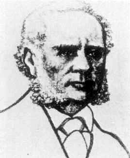
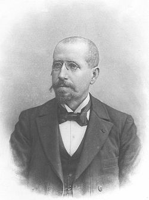
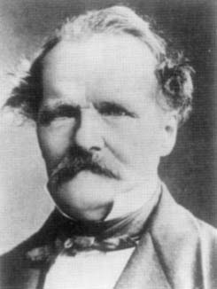
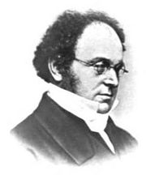

| Choisissez votre langue ! | Choose your language ! |
Règle de Raabe-Duhamel
Raabe-Duhamel rule
Historique
La paternité de ce résultat est fort discutée (disputée). Certains l'attribuent à De Morgan (UK-1806-1871), d'autres à Darboux (FR-1842-1917), d'autres enfin à Kummer (DE-1810-1893 ), mais on le rencontre le plus souvent sous le nom de 'règle (ou test) de Raabe-Duhamel' . Nous avons choisi de nous conformer à l'usage le plus répandu. Il est d'ailleurs tout à fait possible que tous ces mathématiciens aient trouvé ce résultat, qui est essentiellement un lemme technique pour l'étude des séries hypergéométriques, indépendamment les uns des autres et sans avoir connaissance de résultats antérieurs.Galerie des portraits
History
The paternity of this result is highly debated (disputed). Some attribute it to De Morgan (UK-1806-1871), others to Darboux (FR-1842-1917), others finally to Kummer (DE-1810-1893), but it is most often found under the name of 'Raabe-Duhamel rule (or test)' . We have chosen to conform to the most widespread usage. It is also quite possible that all these mathematicians found this result, which is essentially a technical lemma for the study of hypergeometric series, independently of each other and without knowledge of previous results.Portrait gallery
|
Jean-Marie Duhamel (FR -1797-1872)
|
Joseph Raabe (CH-1801-1859)
|
Gaston Darboux (FR-1842-1917)
|
Ernst Kummer (DE-1810-1893)
|
Auguste de Morgan (UK-1806-1871)
|
|  |  |  |  |
Le théorème
Nous commençons par le résultat préliminaire suivant:The theorem
We start with the following preliminary result:théorème 1
Soit (s,u) la série de terme général: un=1/ns (n ≥ 1) Alors (s,u) converge si s > 1.
theorem 1
Let (s,u) be the series of general term: un=1/ns (n ≥ 1) Then (s,u) converges if s>1.
La preuve résulte d'une application directe du de Cauchy.
Nous aurons également besoin du résultat suivant:
Nous aurons également besoin du résultat suivant:
The proof results from a direct application of Cauchy's .
We will also need the following result:
We will also need the following result:
théorème 2
Pour n→∞ on a: (1+1/n)-k=1-k/n+O(1/n²)
theorem 2
For n→∞ we have: (1+1/n)-k=1-k/n+O(1/n²)
Ce résultat est facile à montrer avec peu de moyens lorsque k est entier. Pour le démontrer en toute généralité il faut faire appel à des théorèmes élémentaires de calcul différentiel non encore développés dans ce cours. Nous admettrons donc ce résultat dont la preuve ne présente aucune difficulté quand on connait la notion de dérivée.
La règle de Raabe-Duhamel est essentiellement un test de comparaison avec les séries 1/ns. Nous l'énonçons maintenant:
La règle de Raabe-Duhamel est essentiellement un test de comparaison avec les séries 1/ns. Nous l'énonçons maintenant:
This result is easy to show with few means when k is an integer. To demonstrate it in all generality, it is necessary to appeal to elementary theorems of differential calculus not yet developed in this course. We will therefore accept this result, the proof of which presents no difficulty when we know the notion of derivative.
The Raabe-Duhamel rule is essentially a comparison test with the 1/ns series. We now state it:
The Raabe-Duhamel rule is essentially a comparison test with the 1/ns series. We now state it:
théorème 3
Soit (s,u) une série pour laquelle limn→∞ |un+1/un|=1 (s,u) sera absolument convergente s'il existe un réel strictement positif c tel que:
\( \displaystyle \limsup_{n \to \infty }n\left ( \left| \frac{u_{n+1}}{u_{n}}-1\right| \right )=-1-c \)
theorem 3
Let (s,u) be a series for which limn→∞ |un+1/un|=1 (s,u) will be absolutely convergent if there exists a strictly positive real c such that:
\( \displaystyle \limsup_{n \to \infty }n\left ( \left| \frac{u_{n+1}}{u_{n}}-1\right| \right )=-1-c \)
démonstration
Considérons la série (t,v) de terme général:vn=An-1-c/2
où A est une constante quelconque.
Compte tenu de la remarque préliminaire nous avons:
vn+1/vn=1-(1+c/2)/n+O(1/n²)
Lorsque n → ∞ nous avons:
n(vn+1/vn-1) → -1-c/2
Nous pouvons donc trouver N tel que pour n > m
|un+1/un| ≤ vn+1/vn
Un choix convenable de la constante A nous permet d'assurer que:
|un| < vn
Et la convergence absolue de la série (s,u) résulte de la convergence de la série (t,v).
proof
Consider the series (t,v) with general term:vn=An-1-c/2
where A is any constant.
Given the preliminary remark we have:
vn+1/vn=1-(1+c/2)/n+O(1/n²)
When n → ∞ we have:
n(vn+1/vn-1) → -1-c/2
So we can find N such that for n >m
|un+1/un| ≤ vn+1/vn
A suitable choice of the constant A allows us to ensure that:
|un| < vn
And the absolute convergence of the series (s,u) results from the convergence of the series (t,v).
Nous avons donc le corollaire suivant (en pratique plus utile que le résultat lui-même):
So we have the following corollary (in practice more useful than the result itself):
théorème 4
Si |un+1/un|=1+k/n+O(1/n²) pour n → ∞ où k est une constante vérifiant k < -1, alors la série (s,u) est absolument convergente.
theorem 4
If |un+1/un|=1+k/n+O(1/n²) for n → ∞ where k is a constant verifying k < -1, then the series (s,u) is absolutely convergent. |
Création Gilles Dubois - licence CC-BY-SA
Created by Gilles Dubois - licence CC-BY-SA
|
Septembre 2023
September 2023
|
Version mobile Jquery
Mobile Jquery version
|
|